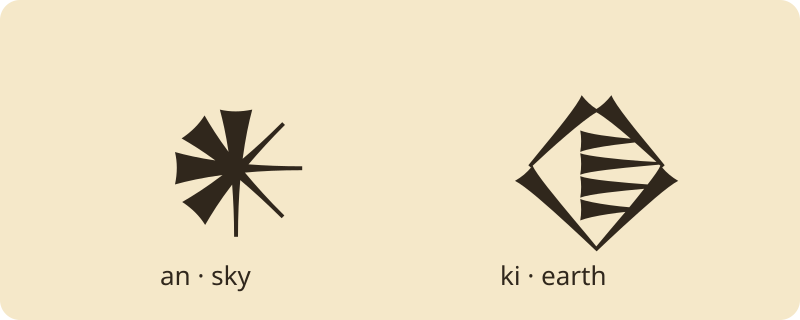

Language & Literature · Grades 6–12
Learning
Cuneiform
A Sumerian scribe’s workshop
What can a wedge tell you? Learn a small set of Sumerian word signs, then compare a written sign, its scholarly reading, and its English meaning.
30–40 minutes
Observe → learn signs → assemble → explain
Clay. Reed. Wedge.
A modern teaching composition using standardized signs, not a reproduction of an ancient tablet.Your reading mission
- Distinguish the writing system from the language it records.
- Read a small set of signs using the supplied key.
- Explain a reading limit with evidence from your activity.
Predict: Must a picture-shaped sign always mean the object it depicts? Discuss before opening the sign bank.
1 · Observe the writing
Cuneiform is a writing system used for Sumerian, Akkadian, and other languages. Scribes pressed wedge-shaped marks into clay with a stylus. Signs can stand for words or syllables; their readings depend on language and context. The printed signs here are standardized font forms, not copies of one dated tablet.

One sign, several jobs
an · sky / heaven: a word reading.
Changing this context label supplies the answer; it does not automatically translate an inscription.
2 · Inspect the sign bank
Select a sign to inspect its reading. Latin labels are transliterations, not English translations.
Choose a sign to reveal its reading note.
Printable sign key
| Reading | Meaning or picture | Note |
|---|---|---|
| an | sky / heaven | AN sign · also dingir, “deity,” or a divine-name marker |
| ki | earth / place | KI sign · also a place-name marker |
| e₂ | house | E₂ sign · subscript distinguishes sign readings |
| lugal | king | LUGAL sign · Sumerian word reading |
3 · Assemble and test
Build an ki: “heaven and earth.” Put the sky sign before the earth sign.
Inspect a sign above, then add it. You can repeat signs or undo a choice.
Your practice tablet
No signs yet.
Use the sign bank to begin.
Reading limit: This is a guided Sumerian sign sequence, not an English-to-cuneiform translator or a complete sentence. A sign’s shape and reading can vary across periods. AN does not always mean sky: it can also be read dingir, “deity,” or mark a divine name.
4 · Explain the evidence
Why can you not translate every AN sign simply as “sky”?
Choose an answer; you can revise it.
Your writing stays on this page until you leave. Use Print lesson to keep a copy.
From screen to clay
Press wedges into modeling clay with a blunt craft stick. Compare impressions with drawing strokes on paper. Make a practice sign from the bank and label its reading. This is a modern classroom exercise, not an ancient artifact.
Teacher guide & exit ticket
Spend 5 minutes predicting, 10 inspecting, 10 assembling, and 5 explaining. Model the distinction between sign, transliteration, and translation before independent practice. For younger readers, use just the two target signs and explain answers aloud.
Success evidence: an ki · heaven and earth; explain why the lesson key cannot translate every ancient inscription. Ask students to name one observation and one remaining uncertainty.
Sources & next steps
British Museum · How to write cuneiform — background and reading conventions.
Oracc Sign List · AN and Open Richly Annotated Cuneiform Corpus — investigate sign readings in scholarly context.
Oracc · an-ki, heaven and earth and Oracc · e₂ and lugal readings — keys for the practice words.
Font license · The local Noto fonts keep signs legible without an external font service. Diagrams are modern learning aids.